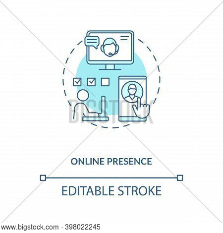

"Good marketing makes the company look smart"
"Great marketing
makes the customer look smart"
In the present era of digitalization, marketing plays a vital role in enhancing a company's growth. Digitalization is changing the world and we all are witnessing it. From the foundation itself the role of digital marketing is very important, it not only helps in attracting the audience but also helps in maintaining them. Considering that over 4.3 billion people are on the web there are dozens of opportunity to give a speed gear to the growth of company.
Let's take a look at the ways in which digital marketing impacts a company's growth :-
-
Attracts, Engages and Maintains the audience
Through this modern way of marketing it becomes very easy to connect with the people who are interested in your company. Traditional methods make it very difficult to reach out to such people who are really interested. However digital marketing not only at tracks but helps in building a healthy and a direct relationship with your audience. One can easily focus on the target audience of a company by conducting surveys on social media. As compared to the traditional method this mode of marketing is more effective in terms of money and time. -
It boosts the ROI of the company
Efforts that one make in marketing never goes in vain. One of the major role of digital marketing is to make more money from marketing efforts. Online advertising is extremely cost effective offereing an impressive ROI(Return on Investment). -
It helps you in tracking company's effectiveness
One of the best thing about the impact of digital marketing is that you can see result almost in real time. There are various tools to monitor your ROI and track all the analytics based on the customer reviews which help you in keeping a close look at your effectiveness not only this it also hepls in improving your performance you can use these reviews as data to improve your future decisions.

-
Build a presence online

The modern customer doesn't look through newspaper or magazines, they use Google, Facebook or Instagram. If you aren't there as a company you are missing out. On an average person spends over three hours on social media everyday which obviously is a great way to attract them towards your product and services. Creating your social media accounts is the first thing one should do to extend the impact of digital marketing on the company. The address, owner, contact everything should be made public so that customer audience can reach out to you easily. With social media footprint a potential customer will easily be attracted to the goodwill of your company.
Closure:-
Digital marketing has forever changed the way companies operate and communicate. The impact will continue to grow as more you grow digitally. As social life continues to evolve one must adapt to meet those changes. The best way to adjust in today's competitive world is by adopting modern methods of marketing. It not only helps you in the expansion of company but also helps you in building healthy and positive relations with you audience.